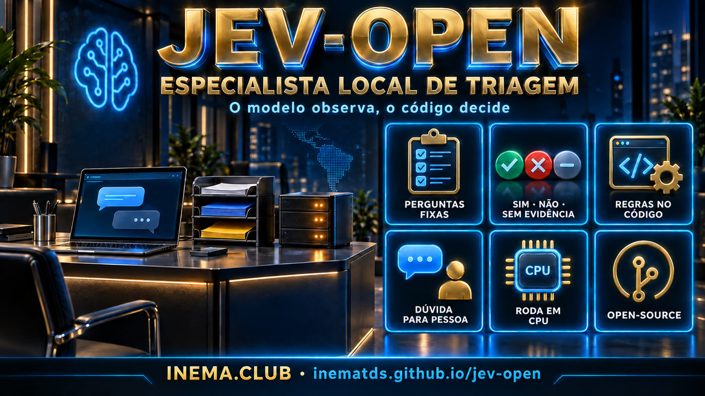

Um especialista pequeno, que roda na sua máquina, lê cada mensagem e responde perguntas fixas com sim, não ou não dá pra saber. A dúvida sempre vai para uma pessoa.

Projeto de pesquisa e educação. Não declara paridade com o Jev nem prontidão para produção. Os exemplos do repositório usam dados sintéticos, e todo número vem marcado como [medido], [relato] ou [simulação].
Cada pergunta da ficha ("quer agendar?", "há urgência?") vira sim / não / incerto, com probabilidade calibrada. Falta de evidência nunca vira "sim".
Agenda, prazos, valores, prioridade e filas ficam em código comum. O modelo só observa, e uma lista de palavras-chave pode escalar casos críticos.
Treina na GPU, serve em CPU com ONNX int8 (~570 MB), numa API sem torch e num container Docker. Nenhuma mensagem sai da máquina.
Toda mensagem continua chegando a uma pessoa. O especialista só ordena a fila e sinaliza o que é urgente.
Ficha da tarefa → exemplos revisados → dados → baseline sem treino → treino das 2 últimas camadas → teste final congelado + raia OOD.
API POST /classify em CPU. Texto vazio, longo demais (nunca truncado) ou erro interno vai direto para revisão humana.
Cada etapa grava um JSON com hashes, métricas e todas as predições. Nada é sobrescrito, e o teste final roda uma vez só.
Para treinar, uma GPU ajuda muito. Para servir, basta CPU.
Gerencia as dependências de treino (torch, transformers, onnx).
uv syncSó para gerar dados sintéticos de protótipo com LLM local, sem custo de API.
ollama pull qwen3:30bA imagem leva só onnxruntime e tokenizers. Os pesos são montados em /pacotes.
docker compose up --buildOs mesmos comandos servem para qualquer nicho: só a pasta tasks/<nicho>/ muda. O passo a passo completo, com os cuidados de cada nicho, está em docs/PASSO-A-PASSO.md.
Confere se o torch enxerga a GPU.
git clone https://github.com/inematds/jev-open && cd jev-open uv sync uv run python -c "import torch; print(torch.cuda.is_available())"
Perguntas, três hipóteses por pergunta, significados de cada rótulo, ações por fila, pergunta crítica e metas. Use um nicho existente como molde.
mkdir tasks/meu-nicho cp tasks/advocacia-atendimento/{ficha.yaml,regras.py,rede_urgencia.py,__init__.py} tasks/meu-nicho/ # edite ficha.yaml, regras.py e a lista de palavras-chave
Uma pessoa do nicho revisa os exemplos (portão 1). Eles contam só como teste e nunca viram dado de treino.
uv run python tools/zeroshot_smoke.py meu-nicho # recibo em tasks/meu-nicho/recibos/
O ideal são mensagens reais anonimizadas. Para prototipar, o gerador sintético usa um LLM local e um segundo LLM como verificador, com tudo marcado como sintético.
uv run python tools/gerar_sintetico.py meu-nicho tasks/meu-nicho/dados/sintetico.jsonl \ --n 320 --gerador qwen3.6:35b-a3b --verificador qwen3:30b --prefixo syn uv run python tools/pipeline.py preparar meu-nicho # split por grupo + dedup + manifest
O baseline decide se vale treinar. O teste final roda uma vez, com base e treinado, no teste e na raia OOD.
uv run python tools/pipeline.py baseline meu-nicho uv run python tools/pipeline.py treinar meu-nicho uv run python tools/pipeline.py testar meu-nicho
ONNX int8, com portão de paridade (±1 pp contra o fp32) e medição de latência. A API recusa o pacote se a ficha tiver mudado depois do treino.
uv run python tools/exportar_onnx.py meu-nicho mkdir -p pacotes && cp -r workshops/meu-nicho-v1/pacote pacotes/meu-nicho JEV_PACOTES=pacotes uv run python -m serve.api --tarefas meu-nicho uv run python tools/testar_servico.py http://127.0.0.1:8080 meu-nicho
Escopo sempre administrativo: sem parecer jurídico, sem diagnóstico. As listas de palavras-chave e os textos fixos precisam ser validados por profissionais antes de qualquer uso real.
7 perguntas: agendar, serviço, andamento do processo, pagamento, documento, dúvida jurídica e urgência (prisão, audiência ou prazo hoje/amanhã, mandado, despejo). Urgência "sim" ou "incerto" vai para o advogado na hora; a meta é zero urgências perdidas. Andamento só depois de verificar a identidade (sigilo).
4 perguntas: agendar, remarcar, documento e sintoma de alarme. Alarme "sim" ou "incerto" vai para uma pessoa na hora; a meta é zero alarmes perdidos. Dado de saúde é sensível na LGPD, por isso tudo roda na máquina da clínica.
POST /classify?tarefa=advocacia-atendimento {"texto": "Boa noite, meu filho foi preso agora há pouco e está na delegacia do centro..."} # formato da resposta (trecho) {"decisao": {"prioridade": "advogado_imediato", "motivos": ["urgencia=sim -> advogado_imediato", "rede de palavras-chave: delegacia, preso -> advogado_imediato"]}, "observacoes": {"urgencia": {"rotulo": "sim", "confianca": ..., "probs": [...]}, ...}}
Estado em 2026-09-25. O que depende de dados reais ou de uma VPS real ainda não foi medido.